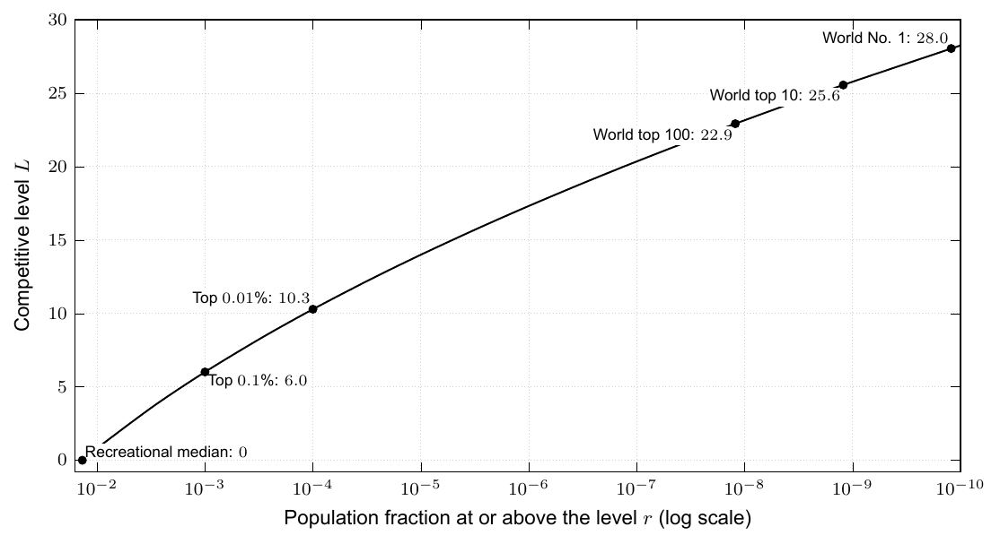

Badminton skill is obviously multidimensional. One player may rely on speed and attack, another on control, anticipation, and consistency. Yet match outcomes eventually compress these different profiles into a one-dimensional ordering: one player is more likely to beat another. This essay asks whether that ordering can be turned into a compact probability scale.
From many abilities to one latent scale
For player i, let Xi denote a multidimensional ability state: fitness, strength, speed, consistency, mentality, tactics, and other relevant components. Let Si = f(Xi) denote the aggregate ability that determines long-run competitive outcomes.
Within a reasonably homogeneous training population, suppose these component effects are approximately additive on a suitable scale, only moderately dependent, and not dominated by any single factor. The central limit theorem then motivates a normal approximation for aggregate ability:
This does not imply that elite players share the same template. Equal aggregate ability may arise from very different combinations of underlying strengths.
Defining one level through match probability
Let Li be player i's competitive level and ΔL = LA - LB the gap between two players. To give the unit a direct competitive meaning, approximate a game by 21 independent rallies and define a one-level gap to mean that the stronger player wins the game with probability 2/3.
Under this simplified binomial model, a one-level gap corresponds to winning an individual rally with probability about 54.6%. To make level gaps additive, define them through rally odds. If p is the stronger player's rally-win probability and κ ≈ 0.1859, then
| Level gap | Rally win | Game win | Best-of-three win | Typical score |
|---|---|---|---|---|
| 1 | 54.6% | 66.7% | 74.1% | 21:17.4 |
| 2 | 59.2% | 80.5% | 90.1% | 21:14.5 |
| 4 | 67.8% | 95.6% | 99.43% | 21:10.0 |
| 8 | 81.6% | 99.95% | 99.99993% | 21:4.7 |
A small rally-level advantage can therefore coexist with a stable match-level ordering. Repetition turns a slight edge into a reliable outcome.
From individual comparisons to a population curve
If competitive level is a linear transformation of aggregate ability, its population distribution remains approximately normal. Let r be the fraction of people at or above a given level and let Φ denote the standard normal cumulative distribution function. Set the median stable young male recreational player to level 0, and use an empirical scale of 6.8 levels per standard deviation. The resulting curve is

The curve gives the scale a population interpretation. Under this calibration, the top 0.1% of the full population is around level 6.0, the top 0.01% around level 10.3, the world top 100 around level 22.9, and world No. 1 around level 28.0.
Why the model feels plausible
Ability gaps shrink near the top. On a logarithmic population scale, the normal-quantile curve gradually flattens. Each additional tenfold increase in rarity corresponds to a smaller gain in level. As long-run ability gaps contract, short-run state fluctuations matter relatively more.
Close scores and stable outcomes can coexist. Elite players may differ only slightly in rally-win probability, yet that edge accumulates over games and repeated matches.
Rank gaps can greatly exceed ability gaps. The population density is extremely low in the far tail, so a small increase in competitive level can correspond to a tens- or hundreds-fold change in rank.
Elite performance need not share one template. Strength, speed, control, anticipation, and other factors can compensate for one another. The scale constrains only their aggregate competitive result.
The construction is complete as a conceptual model: it moves from multidimensional ability to a win-probability unit, then to a population-level curve and qualitative checks. It is not yet an empirical rating system. The distributional assumptions, the 6.8-level calibration, and the fixed 21-rally approximation remain to be tested against match data.